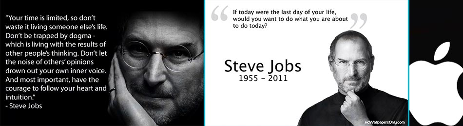
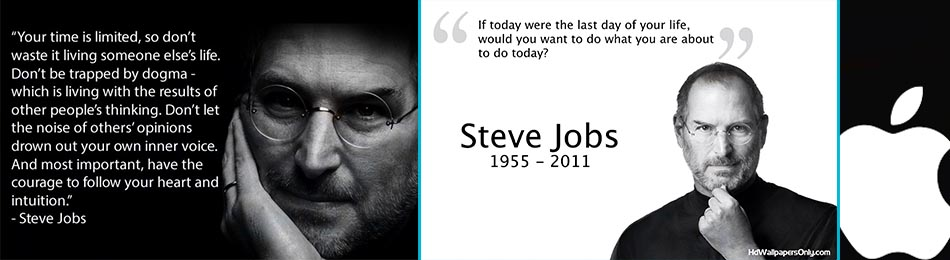

Steve Jobs
Steven Paul "Steve" Jobs (February 24, 1955 – October 5, 2011) was an American entrepreneur, marketer, and inventor, who was the cofounder, chairman, and CEO of Apple Inc. Through Apple, he was widely recognized as a charismatic and design-driven pioneer of the personal computer revolution and for his influential career in the computer and consumer electronics fields, transforming "one industry after another, from computers and smartphones to music and movies." Jobs served as chief executive of Pixar Animation Studios; he became a member of the board of directors of The Walt Disney Company in 2006, when Disney acquired Pixar. Jobs was among the first to see the commercial potential of Xerox PARC's mouse-driven graphical user interface, which led to the creation of the Apple Lisa and a year later, the Macintosh. He played a role in introducing the LaserWriter, the first laser printer to feature vector graphics that started desktop publishing to the market.
After a power struggle with the board of directors in 1985, Jobs left Apple and founded NeXT, a computer platform development company specializing in the higher-education and business markets. In 1986, he acquired the computer graphics division of Lucasfilm, which was spun off as Pixar. He was credited in Toy Story (1995) as an executive producer and characteristically forgiving principal investor of Pixar. He served as CEO and majority shareholder until Disney's purchase of Pixar in 2006. In 1996, after Apple had failed to deliver its operating system, Copland, Gil Amelio turned to NeXT Computer, and the NeXTSTEP platform became the foundation for the Mac OS X. Jobs returned to Apple as an advisor, and took control of the company as an interim CEO. Jobs brought Apple from near bankruptcy to profitability by 1998.
As the new CEO of the company, Jobs oversaw the development of the iMac, iTunes, iPod, iPhone, and iPad, and on the services side, the company's Apple Retail Stores, iTunes Store and the App Store. The success of these products and services provided several years of stable financial returns, and propelled Apple to become the world's most valuable publicly traded company in 2011. The reinvigoration of the company is regarded by many commentators as one of the greatest turnarounds in business history.
In 2003, Jobs was diagnosed with a pancreas neuroendocrine tumor. Though it was initially treated, he reported a hormone imbalance, underwent a liver transplant in 2009, and appeared progressively thinner as his health declined. On medical leave for most of 2011, Jobs resigned in August that year, and was elected Chairman of the Board. He died of respiratory arrest related to the tumor on October 5, 2011.
Jobs received a number of honors and public recognition for his influence in the technology and music industries. He has been referred to as "legendary", a "futurist" and a "visionary", and has been described as the "Father of the Digital Revolution," a "master of innovation," "the master evangelist of the digital age" and a "design perfectionist."
Video
| Born | Steven Paul Jobs February 24, 1955 San Francisco, California |
| Died | October 5, 2011 (aged 56) Palo Alto, California |
| Residence | Palo Alto, California |
| Alma mater | Reed College (dropped out) |
| Occupation | Cofounder, Chairman, and CEO of Apple Inc. Funded Pixar Founder and CEO of NeXT Inc. |
| Years active | 1974–2011 |
| Net worth | US $8.3 billion (July 2010) |
| Board member of | The Walt Disney Company Apple Inc. |
| Religion | Zen Buddhism |
| Spouse(s) | Laurene Powell (m. 1991–2011; his death) |
| Partner(s) | Chrisann Brennan (high school girlfriend and Lisa's mother) |
| Children | 4 including Lisa Brennan-Jobs |
| Relatives | Mona Simpson (sister) |
| Signature |